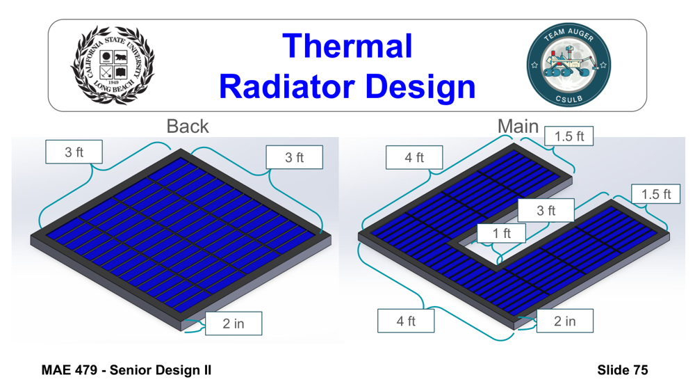
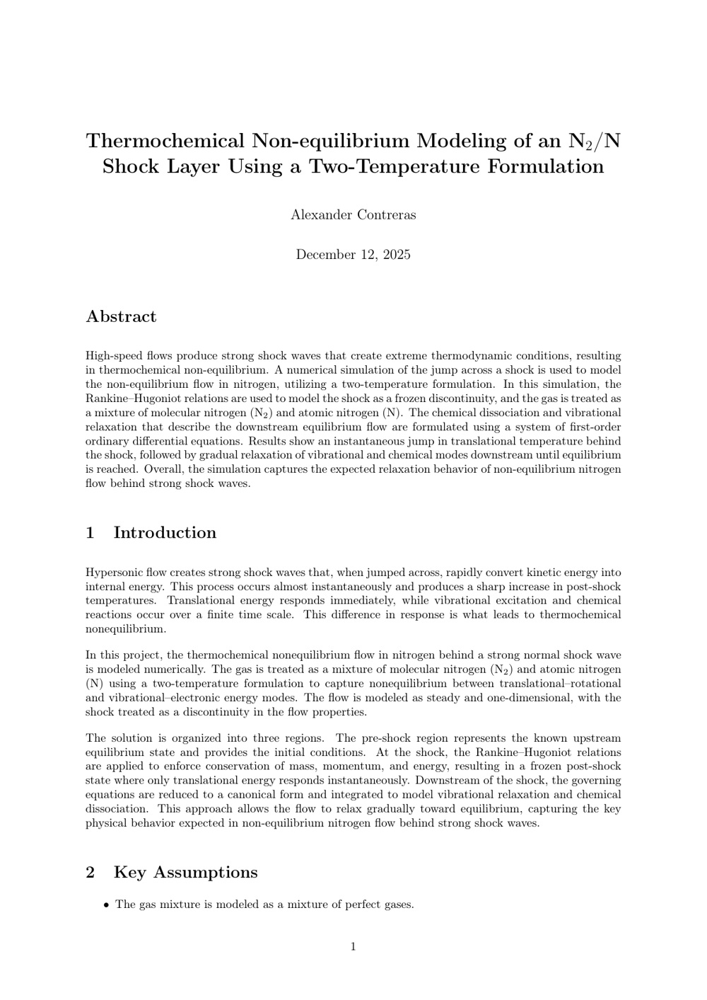

EXPERIENCE
Hands-on engineering work — full reports, review packages, and source code included.

Led an 8-person senior design team through a full design-review lifecycle. Designed the radiator system in SolidWorks (heat-rejection area ~22 ft², ~59% lower heat-flux density) and developed thermal-control requirements and thermal balance / vacuum test plans across a −205°C to 100°C operating range. Ran trade studies on mass, power, cost, and integration that cut estimated project cost by ~35%.
Thermal design matured significantly from PDR to CDR — the initial passive-radiator concept was refined into a heat-pipe-augmented (FHPL) radiator system as trade studies and analysis closed out risks flagged at PDR.
▶ My CDR slides — Thermal Systems + Team Lead (29 slides)
Full team review package (all subsystems): Proposal · SRR · PDR · CDR · SOW · I&T

Built a 1-D nitrogen shock-layer model in MATLAB/Python using Rankine–Hugoniot jump conditions and a two-temperature N₂/N formulation to analyze post-shock relaxation. Implemented a coupled ODE solver for species, velocity, translational temperature, and vibrational temperature, then post-processed outputs into engineering plots and equilibrium metrics.
Read report (PDF) · Source: main.py · rh_jump.py · simulate.py